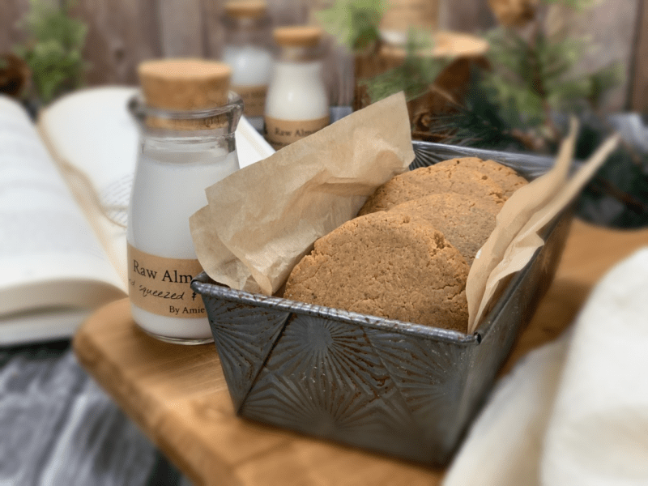
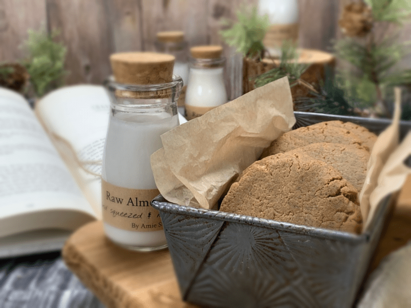

– partly raw, vegan, gluten-free, grain-free –
My husband’s father spent his formative years in a boy’s school/ orphanage called Girard College. Here I will let Bob tell you the story: “My Dad always had a great deal of respect for the lessons learned during his years Girard College. That he wouldn’t have been half the man he was without that experience. But the part I really remember was the amazing Hum Mud cookies.

These were large hard gingerbread cookies, that the boys loved and were an integral part of the culture at the school. Once in a while, my Mom would make them, and on rare occasions, we would get a care package from a family that lived in Philadelphia with those amazing cookies. Amie even made some from my Mom’s recipe book a few years ago.
I am not sure what started this conversation the other day, but I asked if my resident chef could recreate this bit of joy from my childhood in a raw version. And of course, she could. :) So I dedicate, with more than a few tears in my eyes, a new raw version of this recipe to my dad, all the other boys who grew up on those delicious Hum Muds…”
The original ingredients include; water, 1 1/2 pints molasses, 1 teaspoon salt, 2 3/4 lbs all-purpose flour, 8 ounces brown sugar, 1/2 teaspoon cinnamon, 1/2 teaspoon ginger, 4 ounces lard – coconut oil, 1/2 teaspoon allspice, and 1/2 teaspoon ground cloves.

Amie Sue here… I will say, that we both decided to keep one key ingredient and that is the molasses. I bet it has been close to 20 years since I have last used that sticky, stringy, super-duper thick sweetener! It took a few tries using different types of molasses, who knew there was such a difference between them… not I.
Molasses is a byproduct of making sugar, it is the brown syrup leftover once the sugar crystals are removed. There is Fancy Molasses which is the sweetest and has a light color. Often used as a topping on bread, biscuits, and crackers. Light Molasses (made from the first boiling of the cane) contains 40% less sugar than Fancy Molasses, has a more subtle flavor, and is even lighter in color. Dark Molasses (made from the second boiling) is darker in color, thicker, and less sweet. I first started my experimentation with Blackstrap Molasses which is very dark and has a slightly bitter, robust flavor. This left our first batch with a really strange aftertaste, so we tried another.
Then we move onto Cooking Molasses which is a blend of Fancy and Blackstrap Molasses. It results in a darker, less sweet product. But wait, there’s more… Any of these can be Unsulphured Molasses (Sulphur dioxide is sometimes added as a preservative) which is said to have the best flavor, and I have to agree because this is what nailed it for Bob’s childhood memory.
To keep this recipe fully raw, you can use Yacon syrup or raw coconut nectar instead. The flavor isn’t as intense and rich, but still good. After testing four batches, Bob said I nailed it 99% of the way on this recipe. Shew! Enjoy. Blessings, amie sue